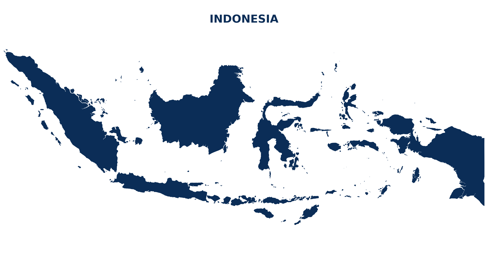

Membran Bakar
Waterproofing menggunakan lembaran membran khusus dengan proses pembakaran.
JASA PERBAIKAN DAK BOCOR, WATERPROOFING & INJEKSI BETON
Mengatasi kebocoran, keretakan beton, dan kebutuhan perlindungan bangunan dengan tenaga berpengalaman, metode yang tepat, dan hasil kerja yang bergaransi.
LAYANAN KAMI
Kami menyediakan berbagai layanan konstruksi dengan standar kualitas tinggi dan pengerjaan yang profesional, sesuai dengan kebutuhan Anda.
Konsultasikan Kebutuhan Anda →Waterproofing menggunakan lembaran membran khusus dengan proses pembakaran.
Cat anti bocor serbaguna untuk atap, dinding, kamar mandi dan area lainnya.
Solusi perbaikan struktur beton dengan material khusus untuk mengatasi kebocoran dan retak.
Pengisian celah pada beton untuk meningkatkan kekuatan dan kedap air.
Pelapis lantai berkekuatan tinggi dengan berbagai jenis dan pilihan warna.
Pengeboran beton untuk berbagai keperluan konstruksi dan instalasi.
PORTOFOLIO
Dokumentasi proyek yang telah kami kerjakan di berbagai lokasi dan kebutuhan konstruksi.
Lihat Semua Portofolio →Telah dipercaya menangani proyek di berbagai kota di Indonesia.

TENTANG KAMI
Berawal dari pesatnya pembangunan gedung, rumah, kantor bertingkat, pabrik, hingga bandara di Indonesia, kami memulai usaha jasa waterproofing membran bakar & injeksi beton sejak tahun 2010.
Dengan pengalaman tim lebih dari 20 tahun dan peralatan yang lengkap serta memadai, kami telah melayani berbagai kebutuhan klien dan konsisten memberikan hasil kerja yang memuaskan — bergaransi.
Proses kerja yang terstruktur untuk memastikan setiap pekerjaan berjalan dengan baik.
Diskusi kebutuhan dan survey lokasi untuk memahami kondisi pekerjaan.
Menentukan metode dan solusi yang sesuai dengan kondisi lapangan.
Penyusunan penawaran berdasarkan kebutuhan dan metode pekerjaan.
Pengerjaan oleh tim profesional dengan peralatan dan standar kerja yang sesuai.
Pengecekan hasil pekerjaan dan penjelasan garansi pekerjaan.
FAQ
Ya. Kondisi lapangan perlu diperiksa agar metode dan material dapat disesuaikan dengan sumber masalah.
Ya, pekerjaan diberikan garansi sesuai jenis pekerjaan dan kesepakatan yang tercantum dalam penawaran.
Silakan hubungi kami untuk informasi area layanan dan ketersediaan tim.
Metode ditentukan berdasarkan kondisi lapangan. Untuk injeksi beton, pilihan material dapat meliputi PU, semen dengan admixture, atau cement based waterplug.
KONSULTASI SEKARANG
Konsultasikan kondisi bangunan Anda dengan tim kami. Kami siap membantu memberikan informasi, solusi terbaik, dan penawaran yang kompetitif.
Sairi Bangun Mandiri melayani jasa perbaikan dak bocor, waterproofing membran bakar, waterproofing coating, injeksi beton, grouting system, epoxy lantai, dan coring beton di Jabodetabek, Bandung, Cirebon, Semarang, Yogyakarta, Surabaya, Bali, Sumatera, Kalimantan, Sulawesi, Papua, Nusa Tenggara, Maluku hingga seluruh wilayah Indonesia. Kami siap melayani proyek rumah tinggal, ruko, gedung perkantoran, apartemen, pabrik, gudang, pusat perbelanjaan, dan berbagai kebutuhan konstruksi lainnya.